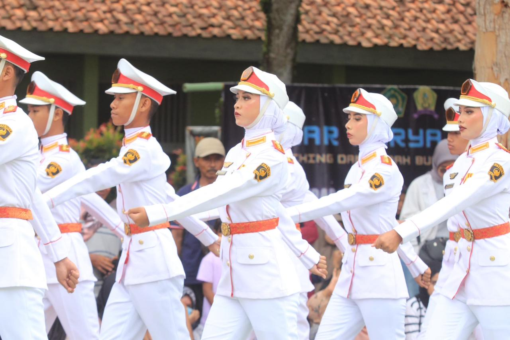

Saat memasuki jenjang SMA, saya menjadi lebih aktif di kegiatan pasko dan sering mengikuti berbagai lomba bersama tim sekolah. Pengalaman itu sangat menyenangkan bagi saya karena kami sering mengadakan latihan gabungan dengan sekolah lain, sehingga saya bisa menambah banyak teman dan pengalaman baru. Dari kegiatan tersebut, saya belajar tentang kerja sama, disiplin, kekompakan, dan tanggung jawab dalam tim.
Saat menjadi senior, saya juga ikut membantu pelatih untuk mengajar junior-junior pasko di sekolah. Selain aktif di pasko, saya juga pernah mengikuti lomba fashion show baju adat bersama pasangan teman saya dan Alhamdulillah berhasil mendapatkan juara. Saya juga pernah mendapatkan juara kelas yang membuat saya semakin semangat untuk terus belajar dan berkembang. Semua pengalaman selama SMA membuat saya menjadi lebih percaya diri, aktif, dan berani mencoba hal-hal baru.